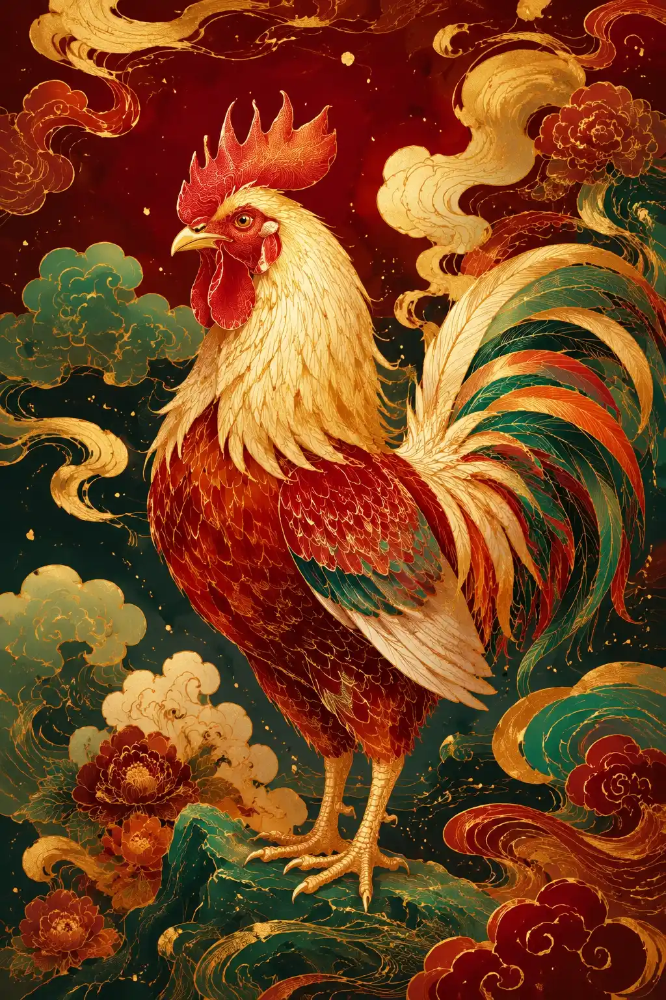

今日鸡运势详解
生肖鸡今日运势上升，得三合助力，工作协作顺畅，宜落实计划，推进速度加快。财运虽有进账，但劫财星动，容易因社交或家人产生开销，投资需保守。感情融洽，单身者易获异性青睐，有伴者少争执。健康留意呼吸系统不适，易有上火症状，注意休息，勿过度消耗精力，稳守底线为宜。

努力终有回报
生肖鸡今日运势上升，得三合助力，工作协作顺畅，宜落实计划，推进速度加快。财运虽有进账，但劫财星动，容易因社交或家人产生开销，投资需保守。感情融洽，单身者易获异性青睐，有伴者少争执。健康留意呼吸系统不适，易有上火症状，注意休息，勿过度消耗精力，稳守底线为宜。
鸡是十二生肖中的第十位。属鸡的人以善于观察、勤奋和勇敢著称。在中国文化中，鸡象征着守时、诚实和华丽。
如果你出生于以下年份，你的生肖是鸡：2029、2017、2005、1993、1981、1969、1957、1945、1933。
属鸡的人诚实、精力充沛且自信。他们对细节有敏锐的眼光，为自己的外表和成就感到自豪。鸡是天然的组织者，擅长以精确和高效管理项目和人员。
鸡在五行中属金。幸运颜色为金色、棕色和黄色。幸运数字是 5、7 和 8。鸡的六合生肖是牛、龙和蛇，而兔被认为是最不配的生肖。
在感情方面，属鸡的人忠诚、支持性强且善于表达。他们通过服务行为表达爱意，享受为伴侣创造美好体验。鸡在关系中重视诚实和开放的沟通。
关于鸡今日运势的常见问题
深入了解更多命理知识